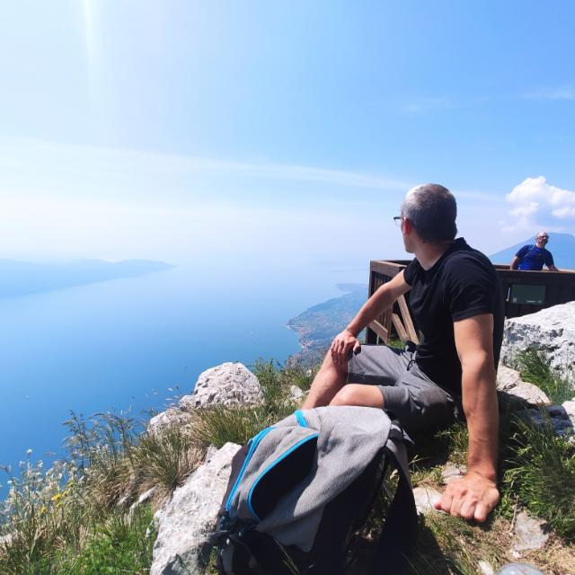
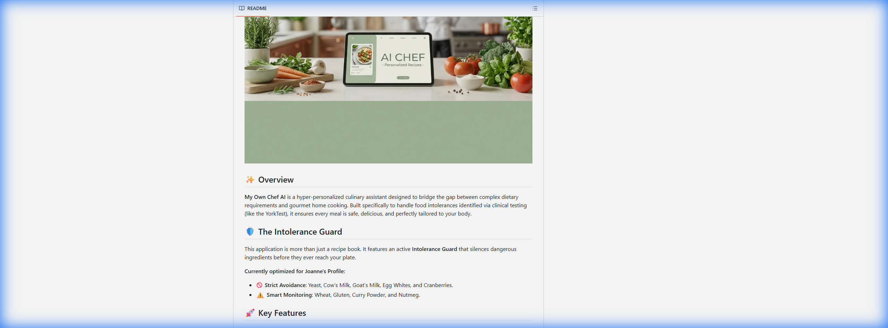
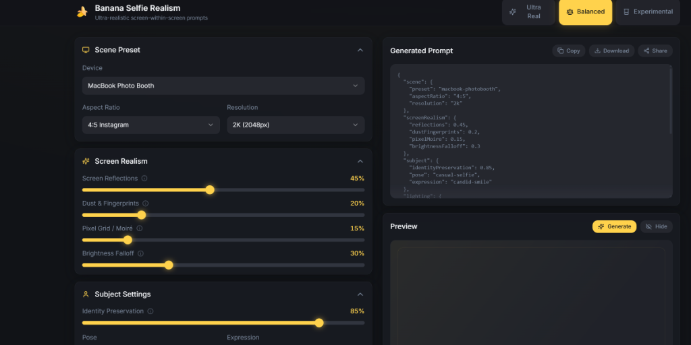
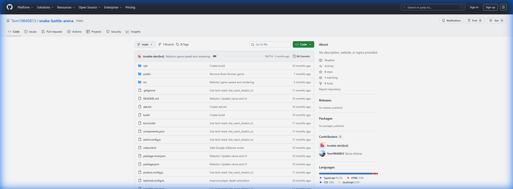
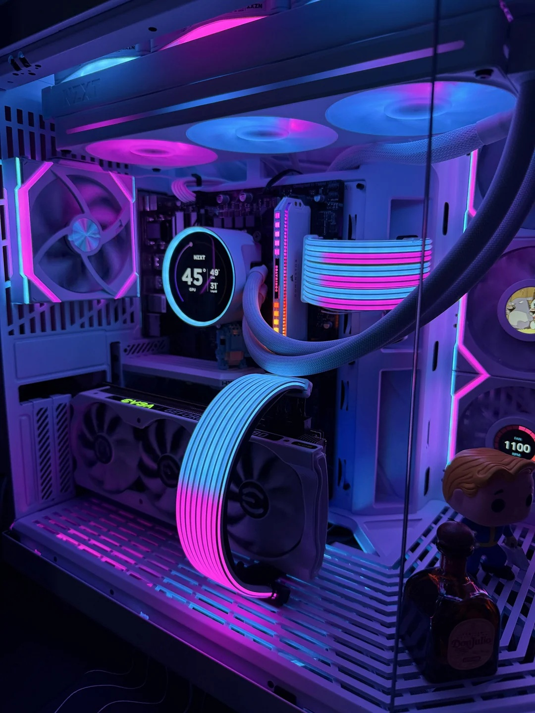

London, UK | CompTIA A+ | ITIL v4 | Open to 1st line IT support roles
IT support mindset with builder energy.
I am an entry-level IT support professional with hands-on experience in Windows systems, networking basics, remote troubleshooting, PC building, and AI development environments. I bring customer-facing calm, a strong learning habit, and a practical approach to solving technical issues.
- Windows 10/11 setup, installation, and troubleshooting
- LAN/WAN diagnostics, router checks, TCP/IP basics, Active Directory awareness
- Customer support experience under pressure, with strong communication and attention to detail

Current focus
Service desk, desktop support, and practical IT operations.
I am targeting roles where strong troubleshooting, customer support, and fast technical growth matter more than inflated titles.
1st line IT support / service desk
Best suited to environments where users need reliable troubleshooting, clear communication, and someone who keeps learning.
CompTIA A+ and ITIL v4
Strong base in support processes, device fundamentals, troubleshooting discipline, and customer service standards.
Hardware to web to AI tools
Built personal systems, configured local AI environments, deployed websites, and documented everything through hands-on experimentation.
About
A grounded technical profile, not inflated marketing.
My background combines front-line customer service with continuous technical self-learning. That combination matters in support work: users need someone who can listen carefully, troubleshoot methodically, and stay calm when systems fail.
I have spent time building and maintaining Windows PCs, configuring GPUs, testing network connectivity, working with WordPress and static websites, and experimenting with local AI tools and automation workflows. I am now focused on bringing that hands-on curiosity into a professional IT support environment in London.
Based in NW7 and available for on-site, hybrid, or desk-based support roles.
I move comfortably between hardware issues, support tools, and modern AI-assisted workflows.
Clear communication, practical fixes, and steady follow-through matter more than buzzwords.
Support Skills
Where I can add value quickly.
Windows support and setup
- Windows 10 and 11 installation, setup, and troubleshooting
- Driver checks, device configuration, and system diagnostics
- Performance issues, clean setups, and general desktop support basics
Remote troubleshooting
- TeamViewer, AnyDesk, and NoMachine across personal systems
- Issue isolation through step-by-step testing and user communication
- Comfort working through access, usability, and configuration problems
Networking fundamentals
- Basic LAN/WAN troubleshooting and connectivity diagnostics
- Router configuration awareness, port checks, and TCP/IP basics
- Active Directory basic knowledge and user-support orientation
Hardware and technical labs
- Built and upgraded multiple Windows PC systems
- GPU configuration, undervolting, tuning, and component troubleshooting
- Local AI environments, Node-based workflows, and WordPress administration
Experience
Customer-facing experience that transfers directly into support work.
January 2025 to February 2026
Hospitality Assistant | BM Catering, Freshfields, London
Worked in a high-end corporate environment where speed, consistency, and attention to detail mattered every day. This role strengthened calm communication, issue resolution, and reliability under pressure.
- Delivered professional customer support in a fast-paced setting
- Maintained strong standards while handling changing priorities
- Built familiarity with Planon-style ticket lifecycle concepts
May 2024 to November 2024
Duty Manager | Pausa Coffee / Dunelm, London
Coordinated people, routines, and quality in a live environment. That translates well into service desk work where communication, ownership, and process discipline matter.
- Managed daily operations and staff coordination
- Improved customer service procedures and repeat visits
- Reduced waste through better planning and process control
September 2023 to January 2024
QSR Supervisor | Gran Bar Eataly, Liverpool Street
Supervised busy operations and monitored performance indicators. It reinforced structured problem solving, fast prioritization, and working with measurable outcomes.
- Supervised staff operations in a high-volume environment
- Improved workflow efficiency and service speed
- Used KPIs to identify and act on operational improvements
Projects
Personal builds that show curiosity, persistence, and technical range.

AI experiment
My Own Chef
An AI-assisted concept focused on nutrition, recipe generation, and practical automation.
Python
OpenAI
Workflow thinking

Interface design
Banana Nano Pro
A prompt engineering interface for specialized image-generation scenarios with a cleaner front-end workflow.
Frontend
Prompt systems
UI iteration


Web and systems
Personal sites and deployment work
Hands-on work with portfolio hosting, WordPress setup, and continuous experimentation with better layouts, tooling, and automation.
WordPress
Static web
Hosting
Credentials
Certifications, platforms, and tools I work with.
Certifications
- CompTIA A+
- ITIL v4 Foundation
- PLC Level 1
- AutoCAD LT
- First Aid
- Driving Licence, Category B
Platforms and tools
Core support
Windows 10/11, Microsoft 365, Google Workspace, ServiceNow, Planon
Remote and diagnostics
TeamViewer, AnyDesk, NoMachine, LAN/WAN testing, router checks, TCP/IP basics
Build and automation
VS Code, Codex, Claude Code, Node workflows, WordPress, basic AWS familiarity, ComfyUI
Contact